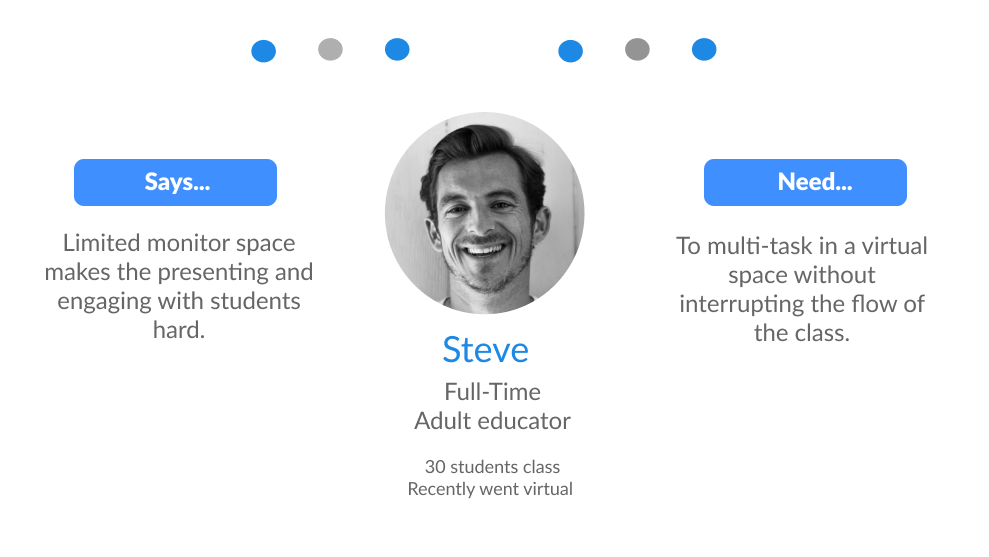
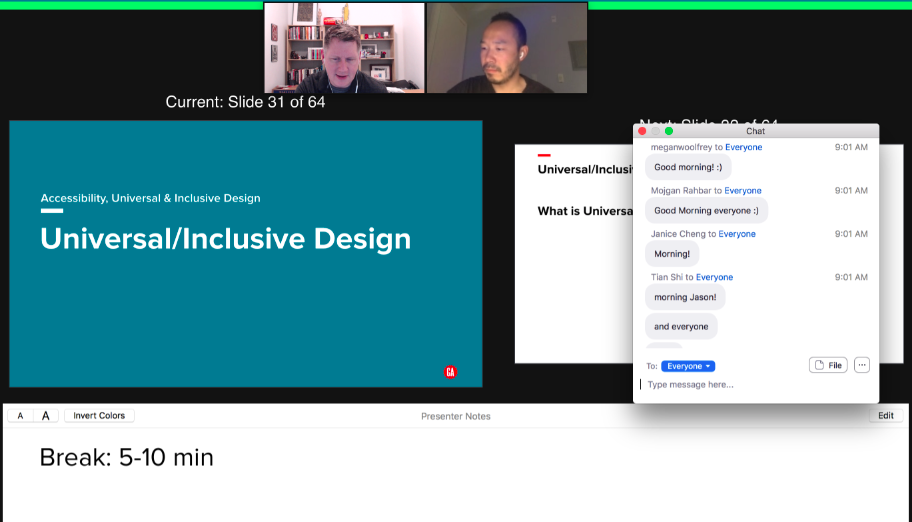
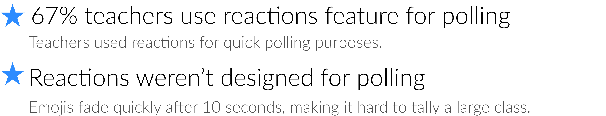

Overview

This group project was about working on behalf of an existing product or service to identify and solve a user need. My team and I decided to pick Zoom because it is currently an important communication platform. We explored in depth and found some UX issues that seriously needed some improvement.
Methodology
The project was done using an agile scrum methodology, using Asana to plan out weekly sprints with daily standups to recap on project milestones and deliverables. Each team member was responsible for one epic and we would assign tickets to each member as required.
In the context of a global pandemic, teachers and students have been forced to transform Zoom into a virtual classroom but are running into limitations, as the application was initially designed for large-scale passive webinars or small-scale casual events…
We recognize there are many types of teachers, however for the purpose of our research, we did not focus on teachers that taught children because they need a structured, physical classroom environment for learning. Instead our team focused on further and higher educators with 10-30 students, where the aim is to maximize student interaction.
Problem
We started off our preliminary research with users interviews and contextual inquiries and found that this specific group of educators felt overwhelmed by the requirement of having to interact with both side chats and emoji reactions, while simultaneously managing their notes and sharing their screen with limited monitor space.
User

User Journey

Pain points
During our research, we surveyed around 18 teachers and students.
Now let's go more in depth with the pain-points of our users...
1) Limited Monitor Space
"When in screen share, you can't be responsive to students. They're not easily visible." — Jason E.
One of the problems that we came across was that instructors had limited space on their monitors to give a presentation, and gauge students' reactions at the same time.

As you can see in the image below, the instructor has their presentation slides opened; as well as their notes, chat box, student videos, the tool bar and any relevant applications for their lecture. It’s a lot to manage at one time.

2) Chat Engagement and Distraction
"Sometimes I have to minimize the chat box because it can get distracting." — Hannah P.

In the image below a teacher tries to monitor both chat and presentation points at once.
3) Polling Feature on Zoom
"I can't do polls unless they are pre-planned. I'd have to schedule everything in advance." — Zoe M.

For example, while in screen share, if you wanted to create a poll, you had to open up an other window in order to create that poll. You also had to prepare the polls in advance because it was designed that way. Even on Zoom’s website, it states that the polling feature wasn’t built for polling ‘on the fly.’

So as an alternative, sometimes teachers would use other platforms like Slack to post up a question for voting purposes.

4) Reaction Features for Polling
"It's easier for me to poll with reactions." — Meaghan T.

If a large group of students put up their reactions at different times, it can be hard for the instructors to tally up the results because the emojis will disappear.
Teachers can bring up the list of participants to see reactions, but not long enough to tally large classes

Area of Focus
Now that we understand this context of limited monitor space, distracting chats, and the reactions feature for polling purposes, let’s look at possible solutions.
Our aims were to help teachers better engage with their classrooms by helping them reach the chat and polling features with the fewest amount of clicks and window applications.
More specifically, how can we help teachers easily filter essential information like questions from general chat, and how can we maximize learnability for a familiar product to meet existing behaviors when it comes to using the Reactions feature as a polling tool?
Technical Limitation
Our users expressed how the UI features would often block their screen when they would be sharing their screen. So our team tried to tackle this issue of limited monitor space by dynamically reducing the screen's aspect ratio and adding the UI on the side. However, we found out through competitive research that none of the other platforms have this feature available, because it is technically impossible to implement.
Technical limitation explained:
The change in aspect ratio would have to involve not only Zoom, but also the operating system provider (such as Microsoft and Apple) would have to implement or give permission for applications such as Zoom to change its operating system, which would be a huge security risk for them. Furthermore, altering that screen that is being shared while sharing that same screen can result in numerous jarring effects - such as a recursive screen or cognitive dissonance (i.e. what's being shared doesn't match what's on your screen).

Our Solutions
Q&A
We found that the best solution was simply to give the ownership of questions back to the students by introducing a message flagging system and adding a Q&A tab to the existing chat box.
Notification
Our usability testing also found that half of our users wanted to see some form of text preview, while the other half found it distracting because they would try to read what students are saying and lose their train of thought.
So we looked at finding sweet spot between visibility and distraction.
This is how it would work...
Students can continue chatting as normal in the regular chat, but now they have the option to flag questions when they come up, and the questions will automatically be migrated over to the Q&A tab.
Teachers can just navigate to this tab to see the messages that have been flagged as questions without needing to scroll through and waste time.
They will also be notified like the image below with a discreet notification telling them that someone has flagged a question.

Making Chat & Reactions Accessible while Screen Sharing
This is the original toolbar. The chat icon is not on the toolbar, and can only be accessed by going through this menu in orange, which is an extra step when teachers are already busy.
Toolbar Update
We proposed to put the chat icon in the toolbar for more efficent accessbility, but Zoom actually rolled out this update in the second week of our project.

Quick Poll
Lastly, we introduced a feature called Quick Poll. It looks and feels exactly like the existing Reactions tool, but now teachers and presenters can access it directly from the toolbar, which wasn’t possible before.


That’s why our aim here was to make it easier for teachers and students to keep doing what they’re already doing with the Reactions tool, which is to quickly ask verbal questions and get fast responses.

Prototypes
Let's turn Steve's previous journey into a Happy Path.
Desktop (Teacher's view)

Mobile (Student's view)

Learning
I learned that while designers are free to image and design endless possible solutions, it is important to do some research and recognize the limitations that exist within the scope of the problem. If our team did not find the technical limitation early on, we would have been led astray and would have potentionally wasted time and resources.